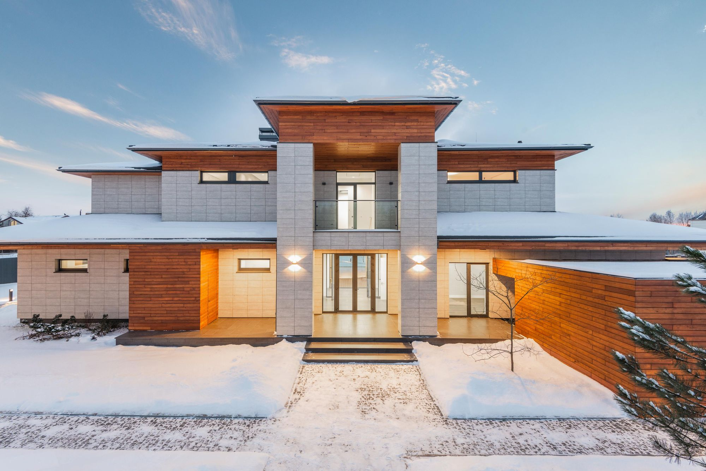
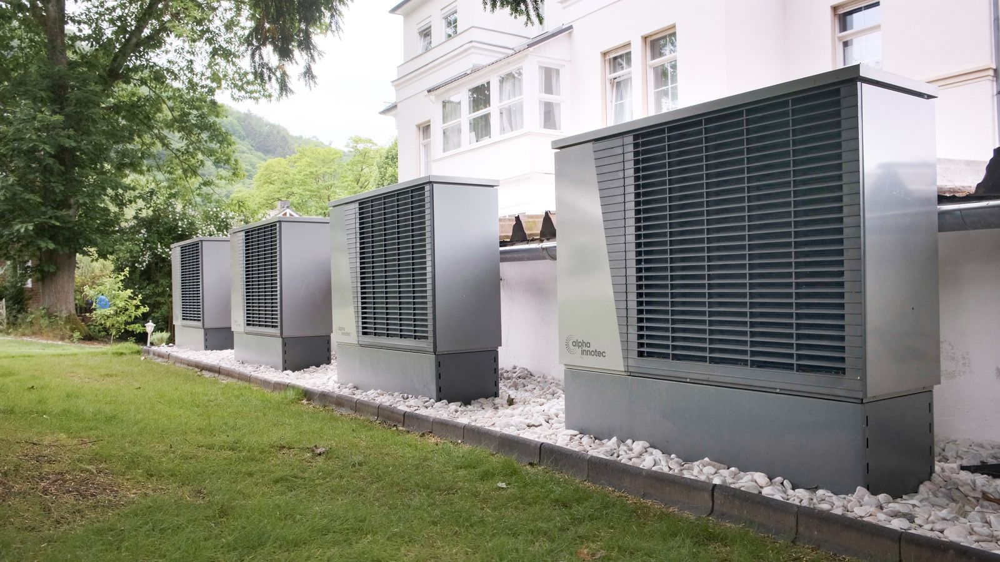
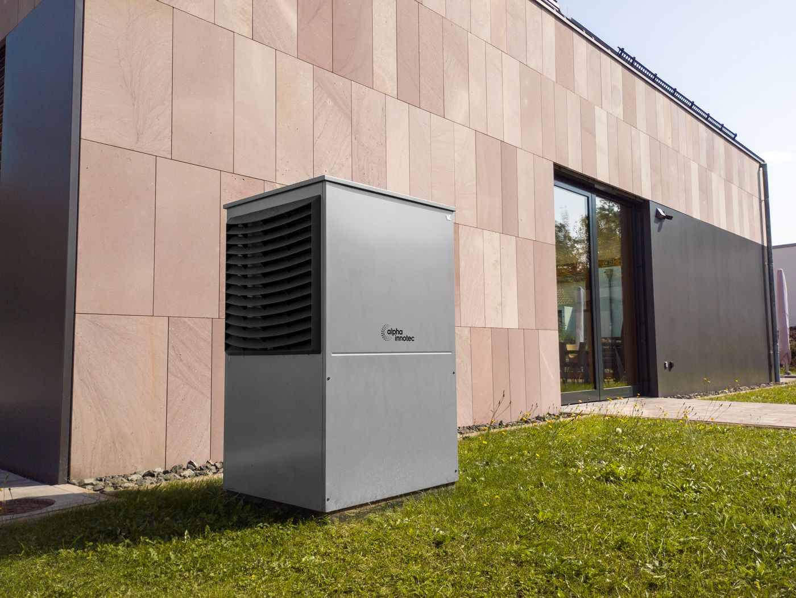
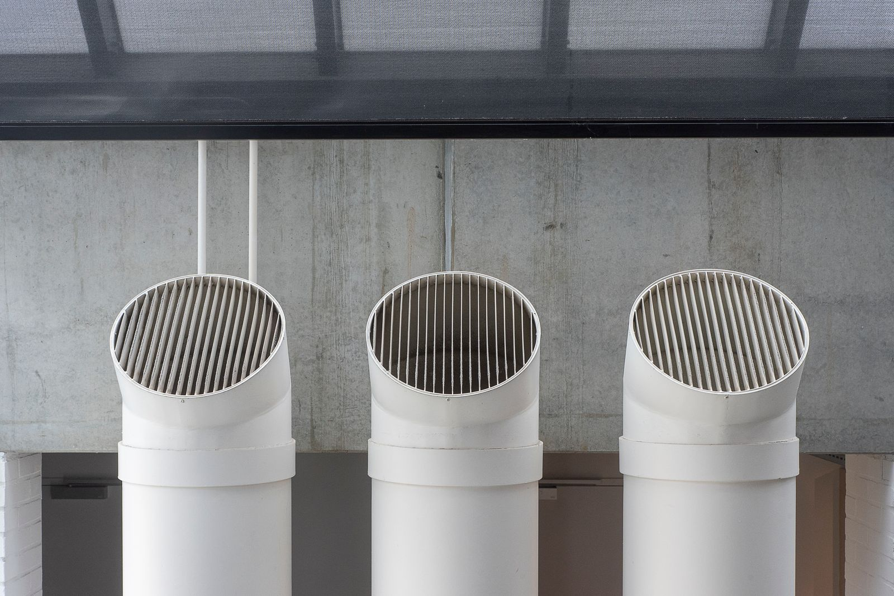

01
Šildymo sistemų įrengimas
Padedame išsirinkti optimalų katilą ir šildymo sistemą pagal jūsų poreikius ir galimybes.
- Geoterminis šildymas
- Dujinis šildymas
- Kieto kuro šildymas
- Skysto kuro šildymas
- Sistemų palyginimas
UAB ISI Baltic · Vilnius
Iš pastato, kuriame yra tik pamatai, sienos ir stogas, mes padarome gyvenimui tinkamą namą. Šildymas, vėdinimas, vandentiekis ir nuotekos vienose rankose.

Sistemos
Šildymas, vėdinimas ir vandentiekis sujungti vienoje pastato schemoje, todėl juos projektuojame ir įrengiame kaip vieną visumą.
01
Padedame išsirinkti optimalų katilą ir šildymo sistemą pagal jūsų poreikius ir galimybes.
02
Kontroliuojamas vėdinimas su rekuperacija privatiems namams, butams ir biurams: švaresnis oras ir mažesni šilumos nuostoliai.
03
Montuojame vandentiekio ir nuotekų sistemas pastato viduje ir lauke.
Įrengiame vandens filtrus jūsų vandentiekio sistemoje.
Gręžiame gręžinius.
Hilti įranga: skylės betone, plytoje ir akmenyje nuo 25 iki 400 mm skersmens, iki 1,5 m gylio, aušinant vandeniu.
Projektuojame inžinerines sistemas pagal jūsų pastato poreikius.
Išklausome pageidavimus ir pasiūlome optimalų sprendimą.
Aptarnaujame įrengtas sistemas ir suteikiame garantijas atliktiems darbams.
Sprendimai


01 · Šildymas
Šilumos siurblys šildo naudodamas aplinkoje sukauptą saulės energiją, nepriklausomai nuo metų laikų, ir leidžia nepriklausyti nuo dujų bei skysto kuro kainų.
02 · Vėdinimas
Rekuperacija yra kontroliuojama vėdinimo sistema, kuri nuolat rūpinasi oro kokybe, pašalina drėgmę ir užkerta kelią pelėsiui. Įrengiame olandų gamintojo Brink Renovent HR rekuperatorius.

95%
šilumos sugrąžinimas iš panaudoto oro
Renovent HR dydžiai
Technika
Šildymo, vandentiekio ir vėdinimo sistemų mazgai visuose įrengimo etapuose. Paspauskite nuotrauką, kad padidintumėte.
Kodėl mes
Daug įmonių siūlo atlikti santechnikos darbus už mažą kainą, bet apie kokybę dažnai susimąstoma per vėlai. Darbus kruopščiai suplanuojame ir kokybiškai atliekame iš pirmo karto.
VizijaTapti lyderiais savo paslaugų sferoje.
MisijaUžtikrinti aukščiausią teikiamų paslaugų kokybę bei atliekamų darbų operatyvumą.
Atliktiems darbams suteikiame Lietuvos Respublikos įstatymuose numatytas garantijas.
Išklausome kliento pageidavimus ir siūlome palankiausią sprendimą: patogumą, estetiką, kainą, ilgaamžiškumą ar darbų laiką.
Nebereikia ieškoti medžiagų ir spręsti, kaip jas parvežti ar išvežti. Tuo pasirūpiname mes.
Bendradarbiaujame su užsienio įmonėmis, kurios yra tarp geriausių santechnikos ir vandentiekio sistemų gamintojų.
Atstovaujame
Šios kompanijos yra pirmaujančios savo srityse ir teikia mums kokybiškas medžiagas bei įrankius.
Kaip dirbame
Aptariame jūsų poreikius, pageidavimus ir galimybes, kad suprastume, kas jums svarbiausia.
Konsultuojame, projektuojame ir parenkame optimalią sistemą bei įrangą.
Sumontuojame sistemas, suteikiame garantiją pagal įstatymus ir prireikus aptarnaujame.
Kontaktai
Aprašykite savo poreikį, o mes grįšime su sprendimu.